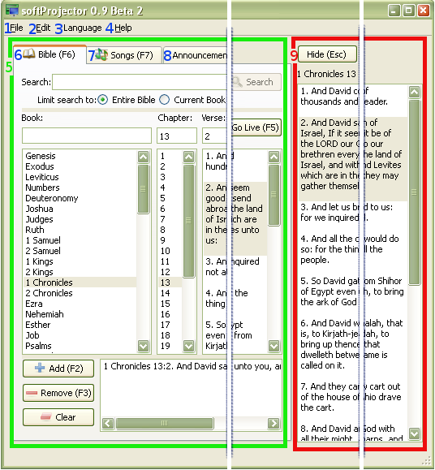

1.3 Program Overview

softProjector is designed as 2 part; the prepare area, live area. In prepare
area, items are prepared and previewed before sent to live area to me
shown.
1. File Menu:
Contains only one menu item,  "Exit,"
this will close the program.
"Exit,"
this will close the program.
2. Edit Menu:
Contains items to modify songs, manage database and program settings
-
2.1
 "New Song..."
"New Song..."
In softProjector, it is possible to add your own songs and song books. Use this menu item to add a new song.2.2
 "Edit Current Song..."
"Edit Current Song..."
Edit the song that is currently selected. More details.2.3
 "Copy Current Song"
"Copy Current Song"
Copy a song that is currently selected into a new songbook or into an existing songbook. More details.2.4
 "Delete Current Song"
"Delete Current Song"
Delete the song that is currently selected. More details.2.5
 "Manage Database..."
"Manage Database..."
softProjector is created in the manner that it is possible to import/export or change Bibles and songbooks.2.6
 "Settings..."
"Settings..."
Use this to change setting for the program. Settings like font, background, Bible to use and others.
-
3. Language Menu:
softProjector is enabled users to have program interface in different
languages. Currently three languages are available, English, Russian and
German. No program restart is needed to switch the language. softProjector
will remember language settings upon exit.
4. Help Menu:
If help information is needed, use this. Program information cab be also
found here.
5. Media Prepare Area:
Prior to show a verse or something else, it needs to be found and prepared.
All preparations are made in this area, and once know what needs to be
shown, it goes to "Show Control Area".
6.
 Bible Tab:
Bible Tab:
On the Bible tab, bible verses can be searched if verse location is unknown,
quickly looked up and then shown on the screen. More info on "Show
Bible" page.
7.
 Song Tab:
Song Tab:
Probably primary use for this program will be to show songs. On this tab,
songs can be easily found and preview. If needed they can be edited, added
or deleted. More info on "Song Songs" page.
8.
 Announcements Tab:
Announcements Tab:
softProjector allows users to show their own text at any time. More info on
"Show Announcements" page.
9. Live Show Control Area:
Once "Go Live" button on any media prepare tab has been clicked, focus goes
onto "Live show control area." Anything changed in this area, will be
immediately reflected on display screen.